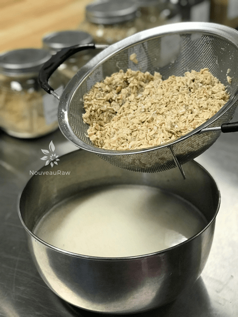
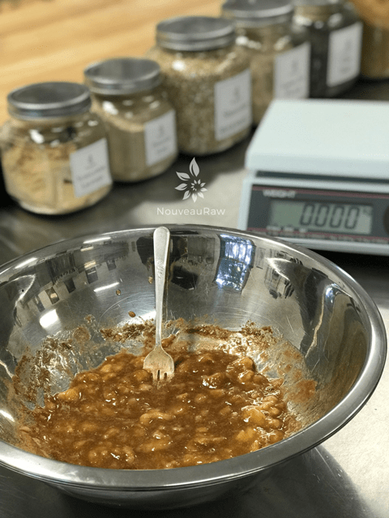
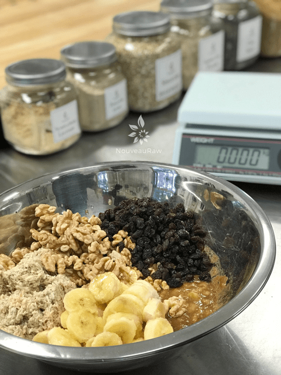
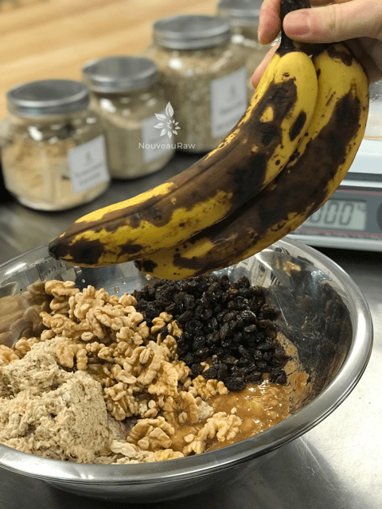
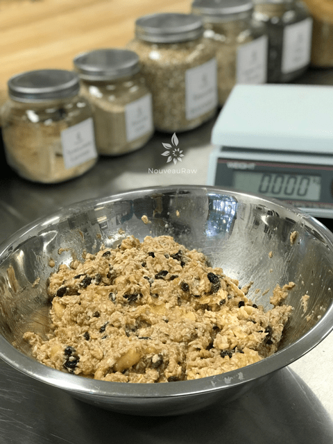
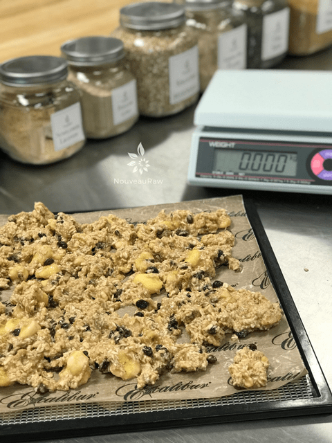

Walnut Banana Bread Granola
 ~ raw, vegan, gluten-free ~
~ raw, vegan, gluten-free ~
Walnut Banana Bread Granola ….. Do I need a better description than those four little words? When I slid the trays into the dehydrator and turned on the fan, the immediate aroma of baking banana bread filled the room.
I found myself sneaking into the “yoga pantry,” for no other reason than to take long, deep inhales of rich aroma! Ah, the “yoga pantry.” If you are new to reading some of my recipes, you may have missed the explanation of my pantry.
A while back I turned our yoga room into a pantry that is dedicated to my kitchen-madness creations! It is still very zen-like which is so fitting for the type of food preparation that I do. So, my husband and I refer to this room as the “yoga pantry.”
In this room I have two dehydrators that I run all the time, always emitting these amazing smells. It is not uncommon to find us both laying on our backs on the floor in the center of the room, eyes closed, listening to the meditative hum of the dehydrators and inhaling all the flavors. Can you smell the banana bread in the air?
A few tips along the way…
When I make granola, I tend to mix the batter with my hands. I wash my hands, remove my rings, and dive in. I find that it is much easier to really incorporate everything.
When placing your batter on the dehydrator trays, I take a handful of batter and sort of squeeze it through my fingers, allowing the batter to “drip or drop” onto the dehydrator sheet. This creates chunks of batter as opposed to spreading the batter out flat, which leaves rough edges on the granola when you break it into smaller pieces to eat. If you wish, you can place the dried granola in the food processor, fitted with the “S” blade, and pulse it into small pieces. Enjoy as a cereal with fresh almond milk. That is what I did this time, as you can see in the photos.
Make sure that use ripe bananas! I can’t stress that enough. Not only are ripe bananas easier to digest they are sweeter in taste. If you use a less than ripe banana you may need to adjust how much sweetener that you add to the batter. The flavor outcome is based on the flavor and quality of the ingredients that you use! I hope you enjoy this recipe, many blessings. amie sue
Yields roughly 13-14 cups dried granola
- 4 cups (400 g) raw, gluten-free oats, soaked
- 2 cups (200 g) raw chopped walnuts, soaked
- 2 cups (340 g) fresh, diced banana slices
- 1 cup (157) raisins
Wet Ingredients:
- 2 large (242 g) ripe mashed banana
- 1/3 cup (88 g) raw honey or maple syrup
- 2 tsp (4 g) ground Ceylon cinnamon
- 1 tsp (5 g) Stevia NuNaturals liquid
- 1 tsp (4 g) vanilla extract
- 1/4 tsp (2 g) Himalayan pink salt
Preparation:
- After soaking the oats, drain and discard the soak water.
- Rinse under cool water for 2 minutes. Set aside.
- Drain and discard the soak water from the walnuts and give them a final rinse before adding to the bowl. Set aside.
- In a medium-size bowl, mash the two bananas with a fork. Leave it chunky.
- Add the sweetener, cinnamon, stevia, vanilla, and salt. Mix well.
- Now add the oats, walnuts, sliced bananas, and raisins. With your hands toss everything together.
- Be careful not to mash the sliced banana too much.
- Drop the batter in a cluster on the non-stick sheets that come with the dehydrator.
- Dehydrate at 145 degrees (F) for 1 hour, then reduce to 115 degrees (F) and continue to dry for roughly 16 hrs or until dry.
- Part way into the drying process, once it starts to dry, transfer the batter to the mesh screens and complete the drying process on these. This will speed up the dry time.
- Store in an airtight sealed container. To extend the shelf life, you can store it in the fridge or freezer.
The Institute of Culinary Ingredients™
- To learn more about maple syrup by clicking (here).
- Why do I specify Ceylon cinnamon? Click (here) to learn why.
- What is Himalayan pink salt and does it really matter? Click (here) to read more about it.
- Are oats gluten-free? Yes, read more about that (here).
- Are oats raw? Yes, they can be found. Click (here) to learn more.
- Do I need to soak and dehydrate oats? Not required but recommended. Click (here) to see why.
Culinary Explanations:
- Why do I start the dehydrator at 145 degrees (F)? Click (here) to learn the reason behind this.
- When working with fresh ingredients it is important to taste test as you build a recipe. Learn why (here).
- Don’t own a dehydrator? Learn how to use your oven (here). I do however truly believe that it is a worthwhile investment. Click (here) to learn what I use.
-

-
I rinse my oats till the water runs about clear. See how milky it is at first.
-

-
Create the “sauce” by mashing together with a fork.
-

-
Combine everything in the bowl.
-

-
Just wanted to show you how RIPE my banana were.
-

-
I like to mix it all together with my hands.
-

-
Drop clusters on the dehydrator trays.
© AmieSue.com